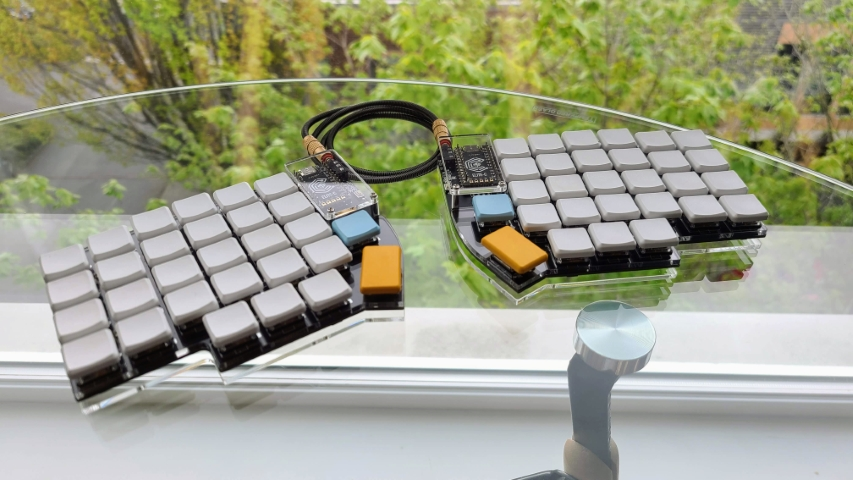

A build log / reference post covering my first stab at a hardware project: building a split ergonomic keyboard running the QMK firmware. After being baited by several beautiful builds online, I really had no choice but to dive into the world of mechanical keyboards... with zero electronics experience under my belt. I relied on several online resources to learn about what goes into building a keyboard, the basic equipment needed, and the firmware pieces necessary for it all to work. I aggregate that information here to help serve as a reference for others planning to give it a shot!
But why?
Before I dig into the how, I figured I should share a bit about the why I went ahead and put together my own keyboard.
I've owned and used a Ducky (2012 model) mechanical keyboard with Cherry MX Brown switches for several years now, but have rarely used it for prolonged typing sessions. Moving into full time work five years ago, I quickly realized the discomfort of using traditional keyboards and found the work-provided Microsoft Sculpt Ergonomic Keyboard did a great job to relieve me of that.
Even after many years of use, the Sculpt keyboard still functions really well and so I wouldn't say it has any faults for my day-to-day needs, but I wanted to go back to the mechanical typing experience and give other layouts a shot. There are several ready-made consumer options out there like the ZSA Moonlander and Dygma Raise but both are relatively pricey for a keyboard, selling for over $350. I didn't want to spend that much money only to then find myself not being able to adjust to the keyboard and the typing experience.
I quickly discovered /r/ergomechkeyboards, saw some beautiful builds, and with not a whole lot else to do during a global pandemic, the lower cost option of building a keyboard myself while meddling with some electronics was the way to go!
My Lily58
There are lots of different keyboard PCB designs out there but I went with one called Lily58. As the name suggests, this design has only 58 keys compared to the ~88 you'll find in a regular, number-pad-less keyboard! There are plenty of designs out there that have far fewer keys than 58, but for this one I still have a full number row that I read was a better way to be introduced to the layout and the need to leverage keymaps and layers. And, as I type this post out with the new keyboard, that was some solid advice!

Oh, and as a side note, maybe starting off with blank keycaps was not the brightest of ideas, but hey, doesn't it look cool?! üòÖ
Learning about the build process
As I mentioned, this was going to be my first real foray into a hardware project, and that too making a keyboard where I needed to solder! I watched several YouTube videos on soldering and some keyboard build videos, and read a handful of build logs and build guides before ordering parts.
Mechanical Keyboards
üì∫ The Worst Hobby on the Internet - Mechanical Keyboards (Beginners Guide) by KristoferYee. Get to know the jargon used in the community, and some hidden gotchas like how deep the mechanical keyboard rabbit hole really goes!
üì∫ Cherry MX Switch Comparison by KeyMouse. Quick intro into the various switches out there and how they differ.
Soldering and Equipment
üì∫ Collin's Lab: Soldering by Adafruit Industries. Great intro into soldering in general.
üì∫ Soldering Crash Course: Basic Techniques, Tips and Advice! by wermy. More soldering basics and tips!
üì∫ Keyboard Soldering and Desoldering for Beginners by Blacksimon. A simple but comprehensive guide around the basic equipment and procedure to use for soldering keyboards. A couple of good tips showcased here around the soldering iron temperatures to use as a beginner and the technique for soldering diodes where you first place solder on one of the pads before pushing the diode into space with a bit of heat.
üìù Recommended Soldering Tools on Keeb.io. Gave me a good idea of some tools and equipment I should have handy when putting together the keyboard.
Build Guides
üì∫ Lily58 Pro Custom Mechanical Keyboard with nice!nanos Build Stream by Nicell. A full build stream that was handy to skim through to see how specific components come together while I was following the written guide.
üì∫ How to Make a Corne Split Keyboard by Nate the Maker. While this is not a Lily58 build video, the steps are more or less the same and a great short video to get a grasp of the overall build procedure.
üìù Lily58 Pro Build Guide by Keyhive. This was the primary guide I followed for putting together the keyboard. The only point I deviated was to first flash the microcontroller with QMK before I got started with the build as it's a good idea to make sure the ones that get shipped boot up and connect! Oh, and my build doesn't have any OLED screens to install so I skipped that bit.
üìù How do I socket a microcontroller? by SplitKb.
Sourcing the bits and pieces
Here's what I bought in order to completely put together the Lily58.
Tools and Equipment
- Soldering iron with basic kit from Amazon. I opted for this over other cheaper options given the ability to control the temperature. I didn't go for anything fancier given that I didn't need something that would heat up in an instant or has replaceable tips available for purchase.
- Heat resistant worksurface mat from Amazon.
- Wire cable cutters/pliers from Amazon. Handy to trim those lengthy pins on the microcontroller after installing it onto the board.
- Solder with rosin flux core from Amazon. While the soldering iron kit above does come with solder, it wasn't clear to me the kind of solder it was in terms of its alloy split, so I grabbed this to use instead.
- Solder flux pen from Amazon. I didn't end up using this as I learned that the extra solder I bought had a rosin flux core that aids in solder joint adhesion.
- Multimeter from Amazon. This is to help debug issues with soldering by performing continuity tests between pins. Fortunately, I didn't have to use this at all during my build!
Cost: ~$73 USD
Keyboard Parts
- Lily58 Pro Kit from BoardSource.xyz. The kit came with all the bits and pieces except for switches and keycaps.
- Microcontroller: I opted for the Elite-C microcontroller for both halves, which is a bit more expensive than the Pro-Micro but is USB-C instead of micro USB. This article on SplitKb.com does a good job at explaining the key differences.
- Key Sockets: I went for the Choc hotswap sockets, which support the lower profile Choc/Kailh switches
- TRRS Cable: The kit builder doesn't automatically select a TRSS cable for you, which is used to connect the two halves via the TRRS socket (which is included in the base kit) so I added this in.
- White MBK key caps from BoardSource.xyz. Grabbed six of the 1u 10 pack, one 1u homing pack (these caps have a little raised lip), and one 1.5u two pack.
- Colored MBK keycaps from MKUltra.click. From here I got a 10 pack of the sky blue 1u caps and a two pack of the yellow 1.5u.
- Brown choc switches from MKUltra.click. These come in units of 10 switches, so for 58 keys I picked up 6 units.
Cost: ~$179 USD
That brings the total cost to ~$252 USD! A much better deal than buying pre-made, plus I now have equipment to experiment with and take on other projects.
Putting it together
Software
QMK is the software of choice for these keyboards. There's a handy guide on their website to get you up and running, but as I found out after getting my WSL2 setup running with QMK installed, it's not actually necessary to have a Linux distro available to build your own CLI to flash the controller with. Instead, the QMK Toolbox is a great way to get yourself up and running on a Windows machine, pull a compiled firmware package, and flash it onto the microcontroller.
With the QMK Toolbox route, the setup was as simple as:
- Install QMK Toolbox. Grab the latest stable release from their GitHub page.
- Pick
lily58/rev1from the keyboard dropdown and hit Load to pull a copy of the firmware. This includes the default keymap as described in the repo. - Plug in one of the microcontrollers and let the tool pick it up. Out of the box, the controllers were already in DFU (Device Firmware Upgrade) mode for me. Hit Flash and let it do its thing! Unplug then repeat for the other controller.
The microcontrollers should both be good to go! A quick note here is that once both sides are flashed, you only need to flash the primary side with iterative updates going forward unless there are changes to the underlying split keyboard code.
Hardware
I stuck very close to the Lily58 build guide I linked above. A couple of additional callouts, though:
- The PCBs from BoardSource.xyz are reversible, as in you can solder components on either one side of the PCB, but do make sure to pick the left and the right halves before you start soldering!
- Related to the above point, the pin holes for the microcontroller are outlined with a white square box, but there is also a set of holes that are offset for the reverse side. The microcontroller sits on the opposite side of the PCB face to the one that will have diodes and sockets soldered on, so make sure to orientate and slot the controller through the right holes on the correct side.
- Don't plug in (or unplug!) the TRRS cable to connect the two halves while the microcontroller is also plugged in and powered. This is because the TRRS cable does carry power in addition to data, so as a precaution avoid messing around with them while live.
- After each switch is placed in and the microcontroller is hooked up, it's a good idea to make sure all the keys are working as expected-- KeyboardTester.com is super handy for this! I found several keys that were not responding when I got to this stage and fortunately the issues were just due to poor solder joints. Reflowing the solder around the sockets and nearby diodes brought all my switches back to life.
my keymap
There are several community contributed keymaps within the Lily58/keymaps folder in the QMK repo, but I found that there really isn't any one opinionated set of keymaps that folks typically stick to. So taking the default keymap as my starting point, I started to tweak things almost immediately to fit my typing style and allow me to ease into a layout that isn't too far from a standard QWERTY keyboard.
The awesome QMK Configurator online tool let's you pick a keyboard, WYSIWYG yourself a keymap, and even get a compiled firmware download that you can then just flash onto your device! If you're curious, you can check out my keymap by loading in my lily58_keymap.json file that I've hosted as a Gist into the tool. Here's what it looks like about a week in:
// LAYER 0
,-----------------------------------------. ,-----------------------------------------.
| ESC~ | 1! | 2@ | 3# | 4$ | 5% | | 6^ | 7& | 8* | 9( | 0) | =+ |
|------+------+------+------+------+------| |------+------+------+------+------+------|
| Tab | Q | W | E | R | T | | Y | U | I | O | P | -_ |
|------+------+------+------+------+------| |------+------+------+------+------+------|
| Shift| A | S | D | F | G |-------. ,-------| H | J | K | L | ;: | '" |
|------+------+------+------+------+------| [ | | ] |------+------+------+------+------+------|
| CTRL | Z | X | C | V | B |-------| |-------| N | M | ,< | .> | /? | |
`-----------------------------------------/ / \ \-----------------------------------------'
| WIN | ALT |LOWER | / Space / \Enter \ |RAISE |BackSP| Del |
| | | |/ / \ \ | | | |
`----------------------------' '------''--------------------'
// LAYER 1 ("LOWER")
,-----------------------------------------. ,-----------------------------------------.
| ` | | | | | | | | | | | | PSCR |
|------+------+------+------+------+------| |------+------+------+------+------+------|
| F1 | F2 | F3 | F4 | F5 | F6 | | F7 | F8 | F9 | F10 | F11 | F12 |
|------+------+------+------+------+------| |------+------+------+------+------+------|
| | ! | @ | # | $ | % |-------. ,-------| ^ | & | * | ( | ) | | |
|------+------+------+------+------+------| { | | } |------+------+------+------+------+------|
| |CTRL+Z|CTRL+X|CTRL+C|CTRL+V| |-------| |-------| | _ | + | { | } | ~ |
`-----------------------------------------/ / \ \-----------------------------------------'
| | | | / / \ \ |RAISE | CTRL | CTRL |
| | | |/ / \ \ | |BackSP| Del |
`----------------------------' '------''--------------------'
// LAYER 2 ("RAISE")
,-----------------------------------------. ,-----------------------------------------.
| | | 7 | 8 | 9 | / | | | | | | | |
|------+------+------+------+------+------| |------+------+------+------+------+------|
| | | 4 | 5 | 6 | * | | | | | | | |
|------+------+------+------+------+------| |------+------+------+------+------+------|
| | | 1 | 2 | 3 | - |-------. ,-------| ◄ | ▼ | ▲ | ► | HOME | END |
|------+------+------+------+------+------| ( | | ) |------+------+------+------+------+------|
| | | 0 | 0 | . | + |-------| |-------| | | | | | |
`-----------------------------------------/ / \ \-----------------------------------------'
| | | | / / \ \ | | | |
| | | |/ / \ \ | | | |
`----------------------------' '------''--------------------'What's next?
It's only been a week and I'm still slowly getting the hang of things. I'll no doubt continue to iterate on the keymap I've shared above, but I think the itch is still there to meddle a bit more in this space and see what else I can do with the new set of tools and skills I've picked up. I wouldn't mind adding some LED backlighting to this ü§î...